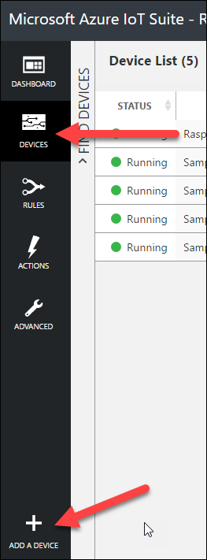
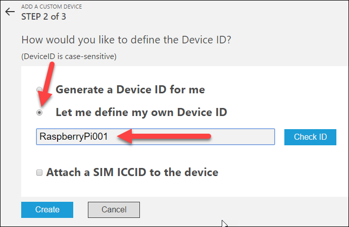
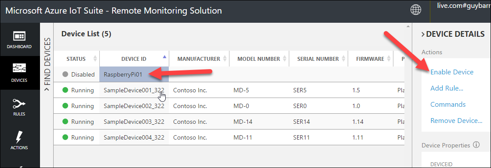
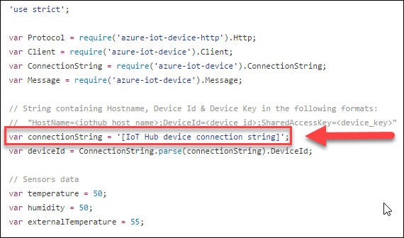
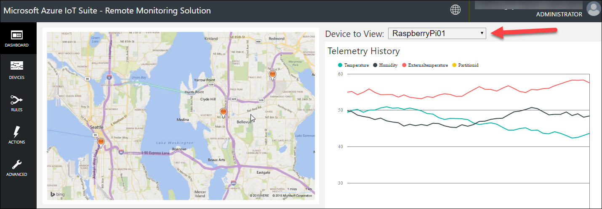

DEMO 2.4: Sending messages from a Raspberry Pi running Raspian
Objectives
Show how a physical device can connect to the same backend and send messages. If you don’t have a device you can skip this demo.
Requirements
An active Azure subscription. If you don’t have an account, you can create a free trial account in just a couple of minutes. For details, see http://azure.microsoft.com/pricing/free-trial/
A Raspberry Pi 2 or 3 with the latest version of Raspbian installed.
Setup
You need the Remote Monitoring solution still running that you set up for Demo 2.1.
Find the Solutions folder for this presentation, then the Demo 2.4 folder, and the file mydevice.js. You’ll need this file.
If not already installed, install NPM on the Raspberry Pi. Open a command prompt and type the following:
sudo apt-get install npm
sudo npm install -g npm@latest
Install the Azure Node packages:
sudo npm install -g azure-iot-device@latest
sudo npm install -g azure-iot-device-amqp@latest
Copy the file mydevice.js to the Raspberry Pi and save the file as mydevice.js.
Demo Steps
In this demo, you’ll explain how to send messages using Node on a Raspberry Pi.
Let’s first create a new device.
Head to the Remote Monitoring Web site. Click on the Devices button in the left-side menu and Add a Device at the bottom of the menu.

Create a Custom device.

Select Let me define my own Device ID and type a unique name. Click the Check ID button to validate that the name is unique then click Create.

Select the newly created device and click on the Enable Device link in the right-side menu.

Head to the Azure portal, select the resource group for the Remote Monitoring solution and select the IoT Hub from the services list.
Click on the Devices button and select the new device.
Copy the device connection string and paste as the connectionString variable value.

Save the file.
At the command prompt type: node mydevice.js
The device is now sending telemetry to IoT Hub.
Head to the Remote Monitoring Web site, select the new device from the dropdown menu. The graph will display the telemetry.

Press Control-C in the Raspberry Pi command prompt window to stop the node script.
This completes this demo.
Teardown
You will still need the Remote Monitoring solution (and the parts listed in the Azure portal) for other demos so don’t delete that stuff yet.